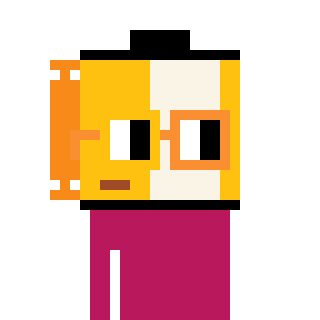
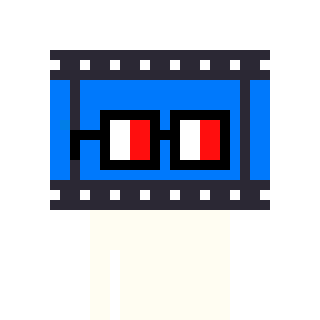
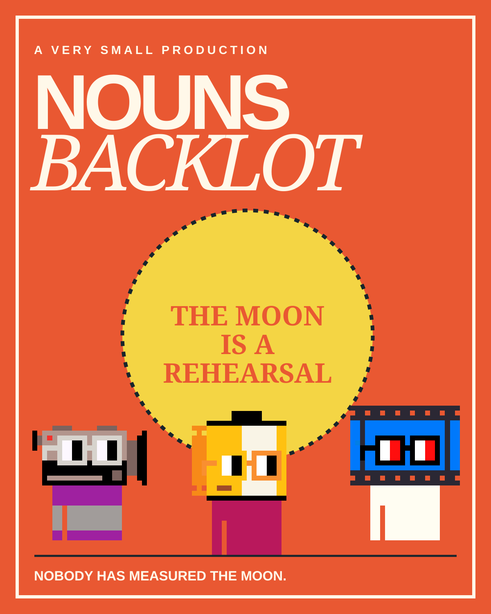
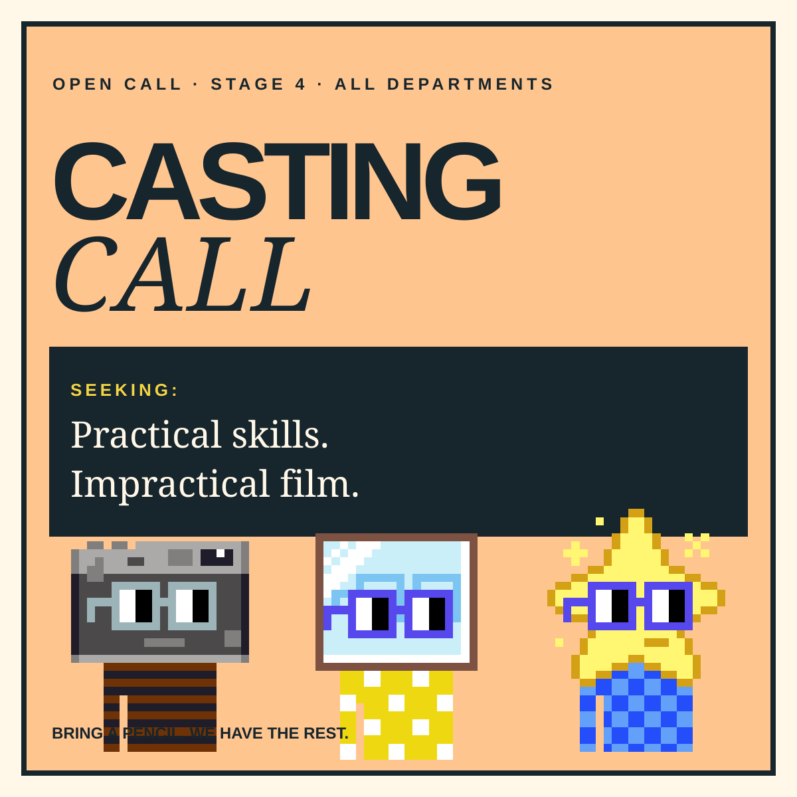
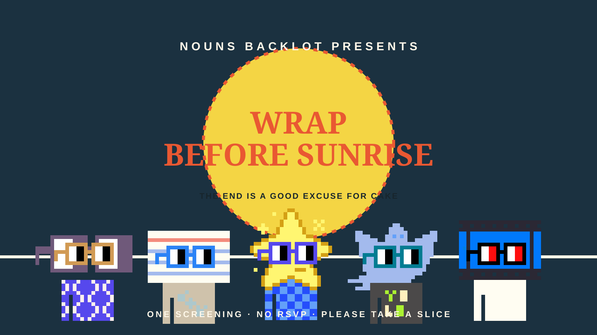

WORKPLACE COMEDY · 10 × 12 MINUTES
Making a movie is easy.
Making this movie is a group project.
Behind the cinema in Offscreen, a forgotten backlot contains three flats, a tea kettle and an eighty-foot cardboard moon. When an optimistic producer promises the picture of the decade, a crew of practical little companions must finish it before dawn—without a script, a safety rail, or enough blue paint.
Every episode turns one ordinary production problem into an enormous miniature ordeal. The fix is never a genius move. It is a better listen.
Step onto Stage 4 →FLAT
DO NOT LEAN



A workplace comedy
with craft-service snacks
PILOT SCENE · 20 BEATS · 04:47–05:02 A.M.
“The moon is visibly a receipt.”
The crew has one take left before sunrise. The paper moon is smaller than advertised. Cam wants forced perspective. Grain wants truth. You are the temporary director.
- 01Pick who gets the close-up.
- 02Set the moon’s believable size.
- 03Choose a final note and roll.
The crew who made a production out of a problem.
These are original fictional backlot roles attached to preserved original Nouns portraits. Their expressions come from lighting, staging, props and timing—not altered character art.
TEN EPISODES · ONE IMPRACTICAL PICTURE
THE MOON IS A REHEARSAL
Each story solves the day’s shoot with too much care and just enough tape. By the wrap party, the crew learns that a thing can be unfinished and still be worth showing someone.
A small picture with an outsized opening.
Three ready-to-use original vector key art files, designed for feeds, posters and a very persuasive call sheet.



LAUNCH COPY
Headline: They had one little moon, a giant idea, and absolutely no room in the prop shed.
Trailer line: This season, the crew of Nouns Backlot discovers that the only thing harder than finishing a movie is agreeing what “finished” means.
Social: Stage 4 has one paper moon, zero safety rails, and a very strong note from art department. #NounsBacklot